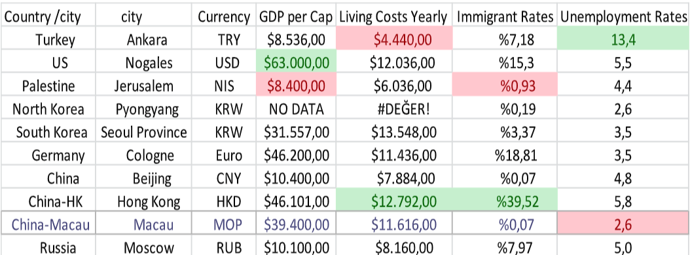
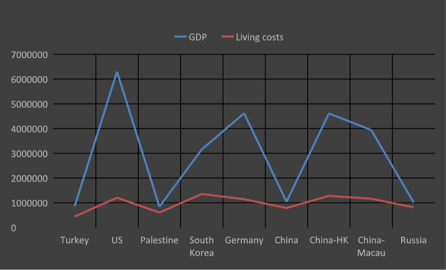

Looking at the national income of the countries, highest national income, United States mint is seen in the States. second most high national income, Germany and South It is in Korea. national income in China Although it is about 10 thousand dollars, Autonomous regions within China in the Hong Kong and Macau regions national income values are approximate compared to China. 3-4 times higher is seen. in Macau After the Covid pandemic, a loss of half in national income values is observed. In this situation, the state
The highest national income values are seen in these countries. reasons…. Looking at the countries with the lowest national income, Turkey, Mexico, China and Russia. China;s low income despite the fact that its autonomous regions national income in these regions with its unique management and methods. increased and high technology in these regions can produce. related to North Korea, national income and Any data on Pyongyang cities not available.
North Korea provided this data to the World Bank. does not share with However, unemployment data shared with the bank. Accordingly, the lowest unemployment value is seen in North Korea. But Korea the accuracy of unemployment data is also clear, according to a study by Lee, Suk of the Development Institute. is not. Looking at the unemployment data, the lowest unemployment rates in countries with the highest national income. is seen. The probable reason for this is the high These countries, which have large amounts of capital, new employment by channeling investments caused by the fields is considered.
Immigrant numbers and unemployment as the number of immigrants has nothing to do within countries where unemployment is high, unemployment is partially lower than that of the country.
